Emberborn
A mod i have in development that adds a magic system inspired by alomancy from mistborn. Its still in early development with only 2 metals (pewter and tin) working.
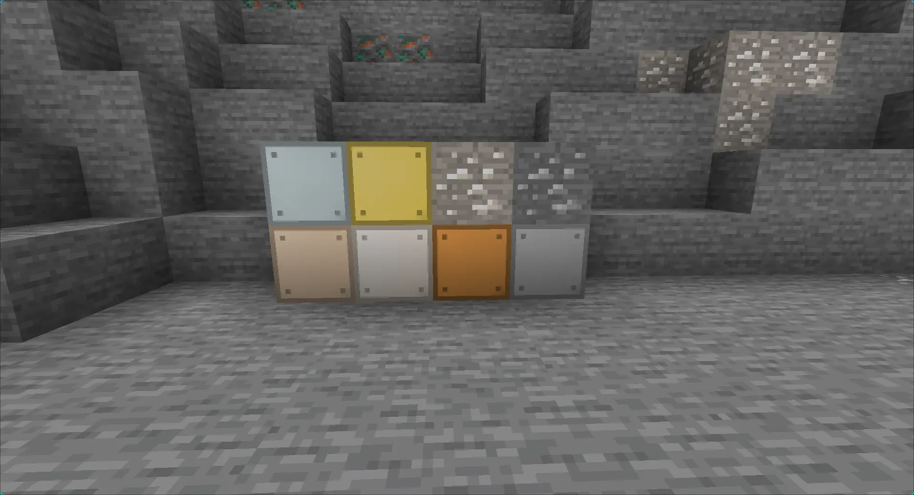
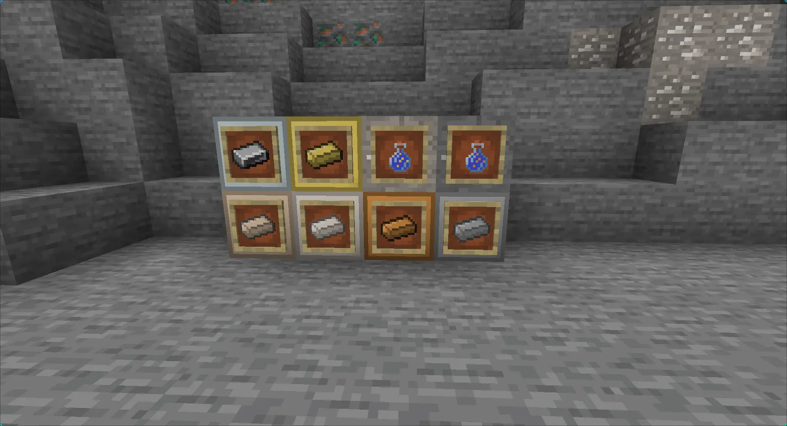
GitHub Repo
SPC Rice
A Hyprland Rice i made for hackclub's riceathon (v3). It is baised on the SCP GOI the SPC
(Selachian
Punching Center).
It uses waybar for the panel, Mako for the notification Daemon, Rofi for the app selector/run
dialog,
and has a cusotom fastfetch logo
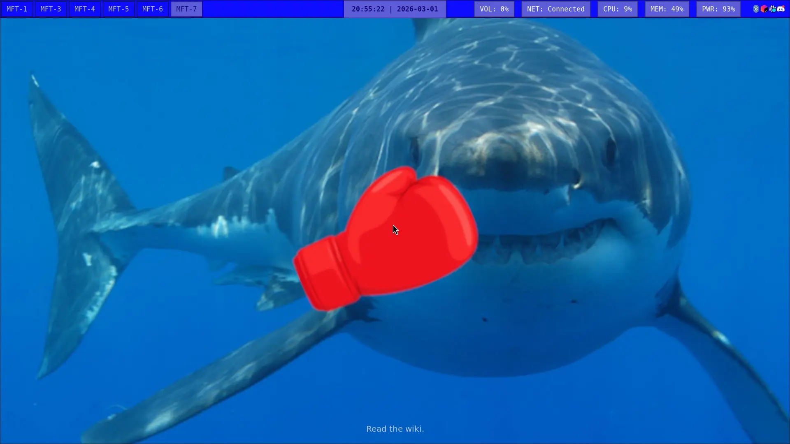
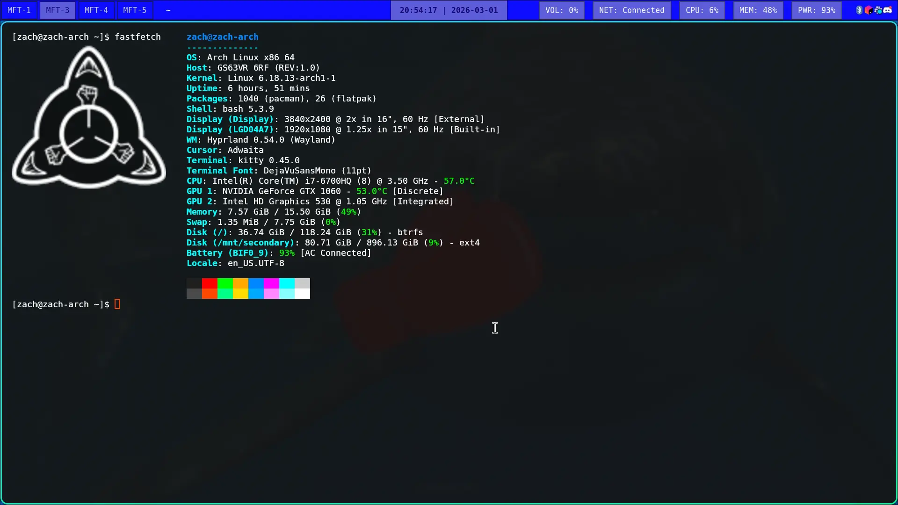
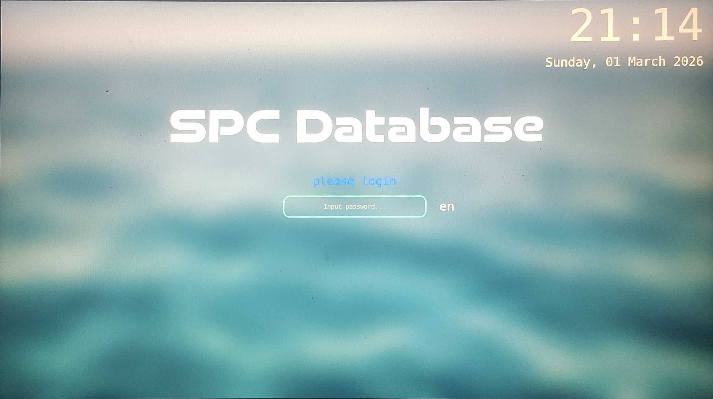
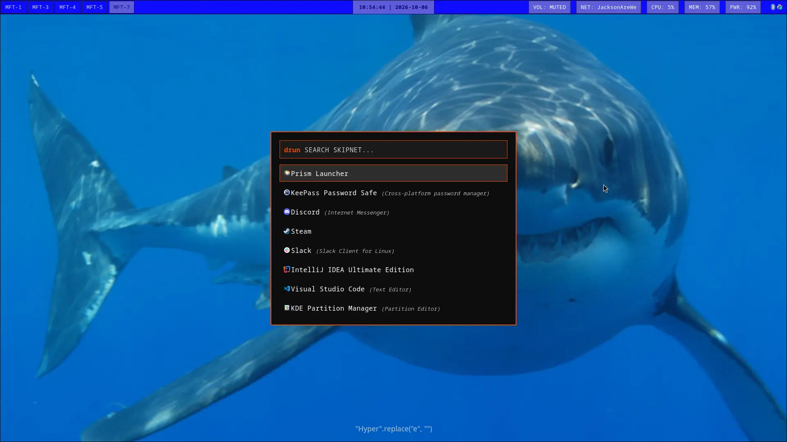
GitHub Repo
Custom Keyboard
My fully custom mechanical keyboard. Designed the PCB, and firmware. Cost ~130 USD
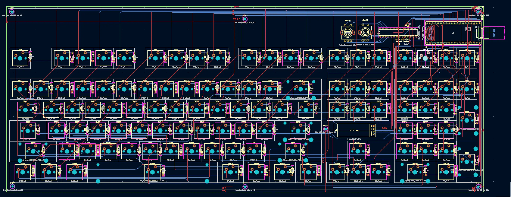
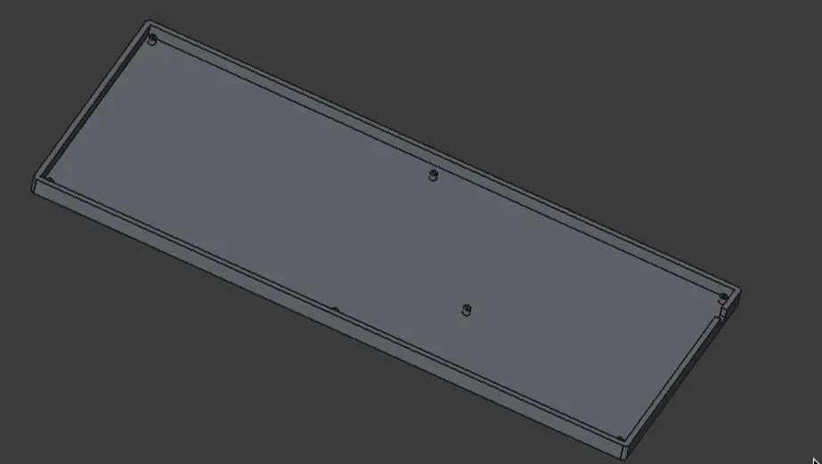
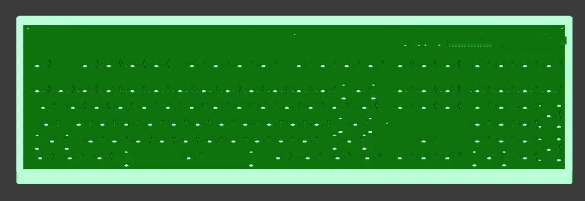
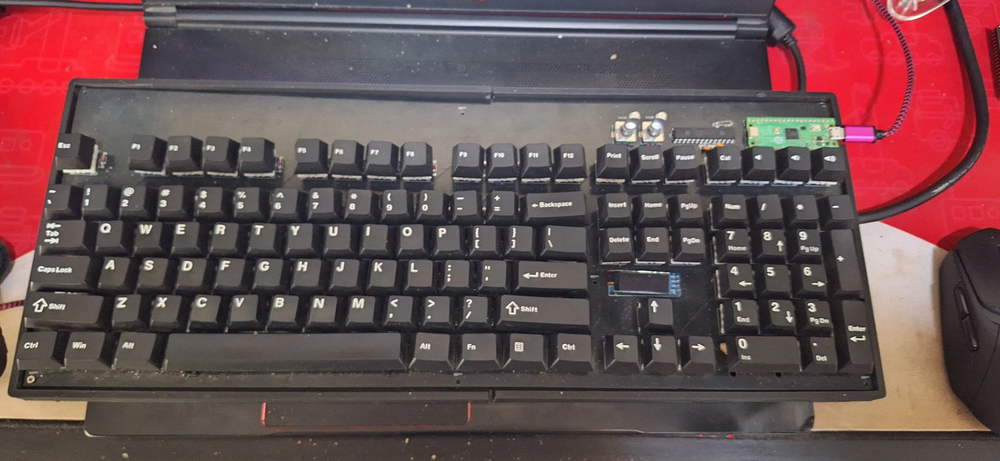
GitHub RepoSwashbuckled Tracker
A simple web tool i made to help with tracking routes, cash, treasure clues, and ship buyback cost
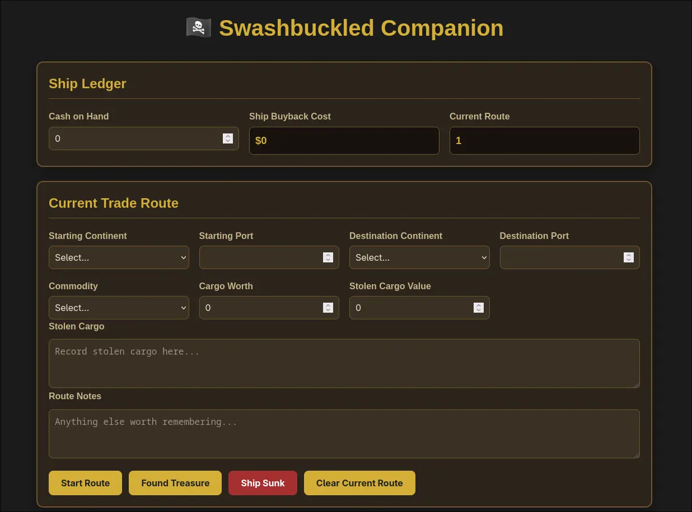
Demo site GitHub RepoCustom NFC Card
A custom NFC card i made via kicad to make sharing The Book of Mormon easier. it was fairly easy and tought me how nfc chips work and the difrent types of nfc chips
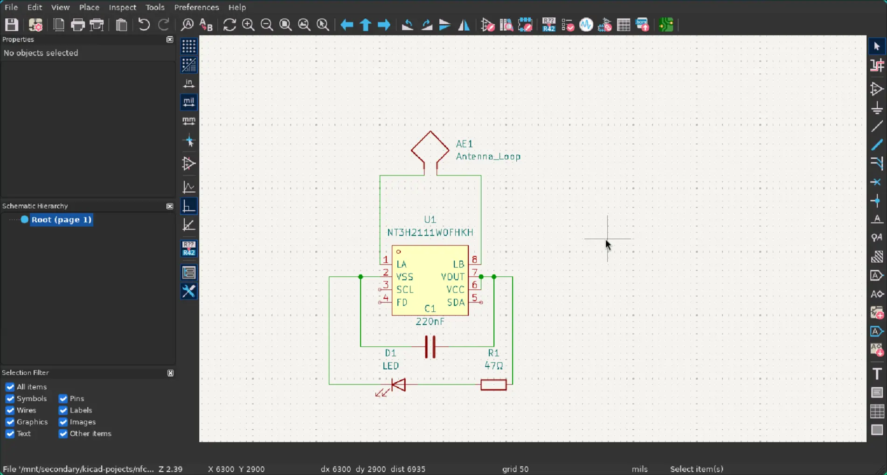
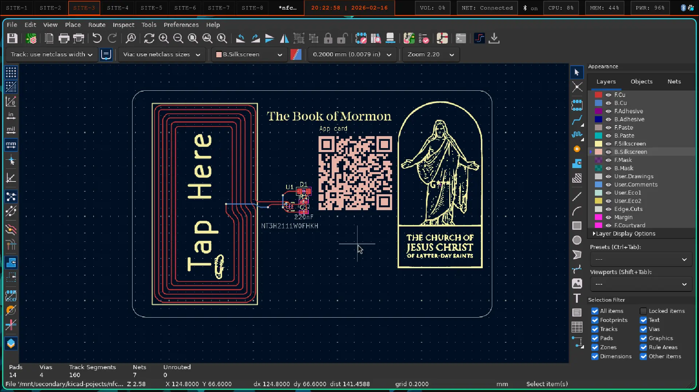
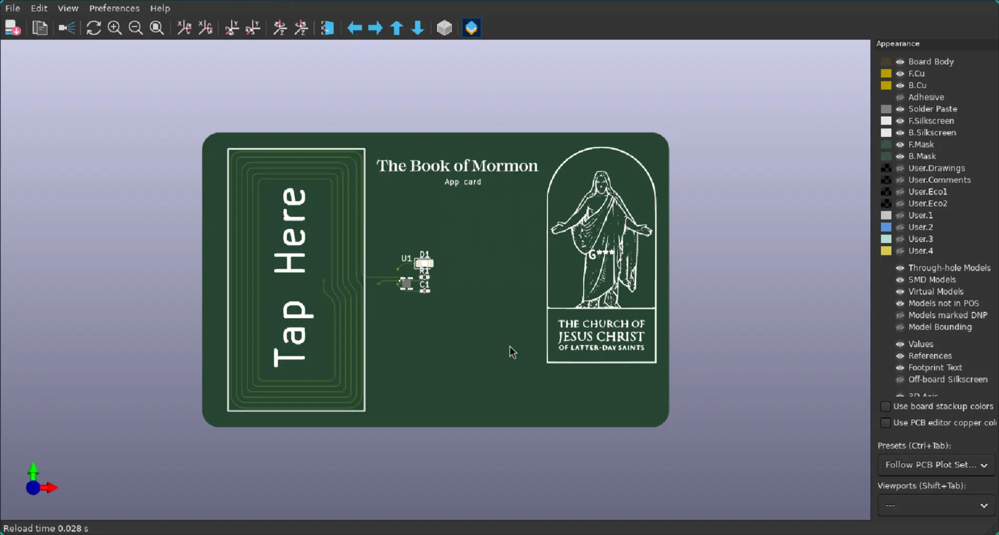
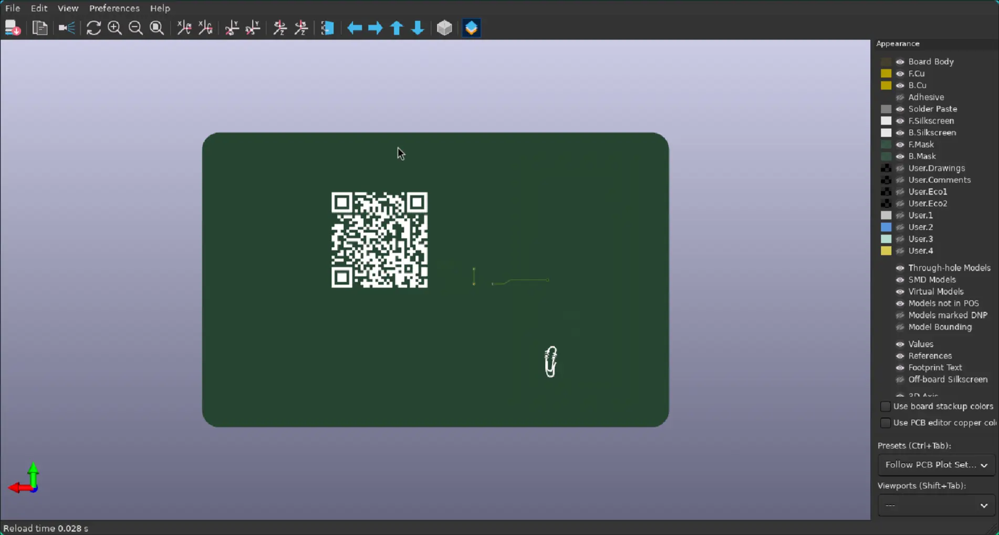
the christast in the arch logo is owned by Intelectial Reserve, Inc
Factorio 600% resources map-gen-preset
\A mod i mad that adds 2 map presets that both set the resources (ores, oil, and other stuff like that that mods add) to 600%. I spent 2 hours working on it so that i can spend like 20 seconds less setting up a factorio save.
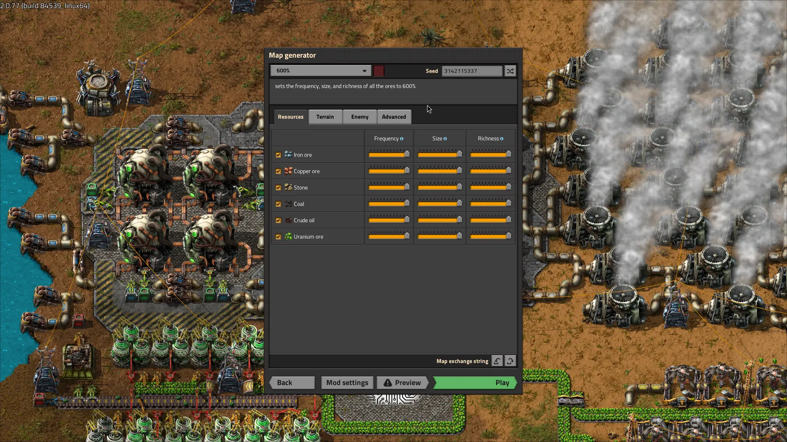
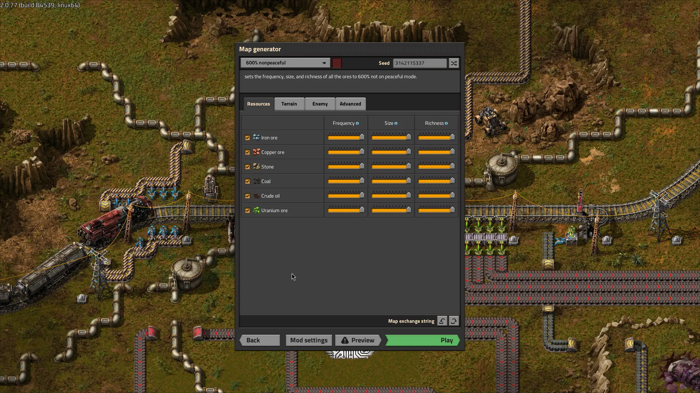